ブルーノイズ最新トピック
ブルーノイズは、digital halftoningという印刷技術に利用されてきた。その後、ブルーノイズはギャンブル、ゲーム、経路探索などの分野において乱数の代わりに利用されてきた。
2020年以降の研究ではパラメータの初期値として乱数の代わりにブルーノイズを使うことで生成AIの生成効率がアップしたという報告もある。
以下に挙げる参考文献では敵対的生成ネットワーク(GAN)という画像生成AIのアルゴリズムで、乱数を使うよりも、相関のある数列(ブルーノイズも相関のある数列の一種である)を 使う方が画像の生成効率が上がるという現象が確認されている。halftoningで乱数であるホワイトノイズを使うよりも、ブルーノイズを使う方がはるかに良い画像が得られる現象と何らかの関係があるのかも知れない。
本ライブラリでは、C++言語のsrand/rand関数、python言語(numpyも同様)のrandom関数のブルーノイズ版を提供している。自由に試していただきたい
| 同じ値のしきい値を用いたときのホワイトノイズとブルーノイズのGIFアニメ | |
|---|---|
| 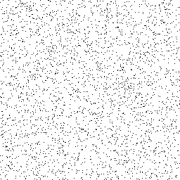 | 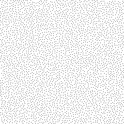 |
| ホワイトノイズ | ブルーノイズ |
勝田敏彦「でたらめの科学」朝日新書
第３章「でたらめの未来」で埼玉大学の内田淳史教授の研究が紹介されている。
ブルーノイズに言及しているわけではないが、これまでの数と次の数にある程度関係のある、相関のある乱数(この時点で乱数と呼べるかどうかわからないが)を使った応用として、通信や交通の混雑回避のため 代替ルートを探すのに、乱数を使うよりも、相関のある数列(ブルーノイズもその一種)を使った応用が考えられるという言及がある。
上図を見ると、混雑回避のための経路を乱数(ホワイトノイズ)で選択するとが元の経路に近いものが選ばれる可能性があるが、 ブルーノイズでは混雑回避の経路は元の経路とはかけ離れていることが保証されている。
上に戻る
概要：乱数よりも偏りなくバラバラの数列
- 第１節では、ブルーノイズとは何かについて述べる。 ブルーノイズは乱数を元にして、値の偏りが無くなるように加工した数列である。
- 第２節では、ブルーノイズが過去、何に使われてきたかについて記述する。 主に、印刷のための"halftoning"に使われてきたことを説明する。
- 第３節では、ブルーノイズの生成アルゴリズムと高速化について解説する。 ブルーノイズの最大の欠点は、ブルーノイズ数列の生成のための計算量が莫大であるという点にある。
- 第４節では、今後ブルーノイズが何に使うことができるかを論じる
- 第５節は、本ライブラリの構築・操作マニュアルである コア部分は、C++用のクラスライブラリとなっておりOS非依存のソースコードとなっている。
理想的な乱数では、ある数値と後続の数値との相関は無い。
しかし、ブルーノイズでは相関がある。すなわちブルーノイズは乱数ではない。
ところが人間の目にはブルーノイズの方が乱数よりも偏りが無くバラバラであるように見える。
白と黒の2色で多階調グレイスケールを表現したり、RGB3色、CMYK4色でフルカラーを表現したりする技法が"halftoning"である。
ブルーノイズは主にプリンタのドライバや印刷装置の回路などに使われてきた。
あらかじめ数列を作っておく必要があるが、その数列をつくるための時間も無視できない。
しかも生成アルゴリズムは並列化に対応できない。原論文通りに計算すると8192×8192(2^26)の数列の計算には数か月必要となる。
今回公開するのは8192×8192(2^26)の数列の計算でも、短時間で処理することができる
pythonやC#等から利用できる動的リンクライブラリ(rand()/srand(int seed)関数の代わりのbluenoise()/sbluenoise(int seed))は、windows用のソースコートとなっている。
動的リンクライブラリはAPIとコアライブラリの橋渡しをしているだけで、他のOSへの移植は簡単にできる。
本ライブラリは他のライブラリは一切必要としていない。
構築にはmakefileとVisual Studioのプロジェクトファイルが提供されている。
32bit/64bitで構築することができるが、4096×4096を超える大きなマトリクスを作る場合は64bit環境での構築が必要となる。
第１節：ブルーノイズとは何か
ブルーノイズは乱数ではない。乱数を元に膨大な演算を使って生成した乱数よりも偏りなくバラバラの数列である。
乱数はほぼリアルタイムに生成することができるが、ブルーノイズをリアルタイムに生成することはできない。理由は数列の生成に膨大な時間がかかるからである。
そのため、あらかじめブルーノイズマトリクスというM×Nの数値マトリクスを計算して用意しておくことが必要となる。
MとNは異なっていても良い。ただしMとNの比率が極端に大きかったり小さい場合は問題が生じる。特に理由が無ければM=Nの正方行列で計算することを推奨する。
メモリ容量の関係で、たとえば16384×8192のようなマトリクスを生成しても問題はない。
いつも同じブルーノイズを使うのかという疑問も生じるが、そのような心配はいらない。
ブルーノイズの一部を取り出したものもブルーノイズであり、ブルーノイズを複数接続したものもブルーノイズとなる。
そのため、乱数のsrand(int seed)のような仕組みも簡単に実現することができる。
大型のプリンタや高解像のプリンタで"halftoning"する場合、マトリクスは大きいほど印刷品質が良くなる。
乱数の代わりとしての通常の利用では256×256～1024×1024程度の小さいマトリクスでも問題は無い。
右はホワイトノイズマトリクスを加工して得られたブルーノイズの画面である。
密度は同じである。
| ホワイトノイズとブルーノイズ画像 | |
|---|---|
| 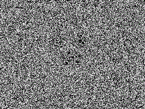 | 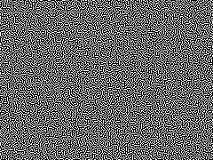 |
| ホワイトノイズ(rand()関数) | ブルーノイズ(bluenoise()関数) |
一部を拡大したものが下図となる。
| 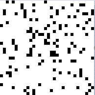 | 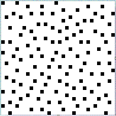 |
| ホワイトノイズ rand関数で生成した乱数系列を表示。人間の感覚的に偏っていてバラバラには見えない |
ブルーノイズ ホワイトノイズを加工することで得られるブルーノイズ。人間の感覚的にバラバラに、偏りもなく見える |
上に戻る
第２節：何に使われてきたか
ブルーノイズは、デジタル画像の"halftoning"に利用されてきた。halftoningは、黒いインクしかないプリンターでグレイスケール印刷をしたり、数色のカラーインクでフルカラー印刷をするために開発された技術である。
ブルーノイズを使った印刷では、理論的にはプリンターに1ピクセル分の画像データと、プレーン数分(インクの色数に等しい)だけのブルーノイズ数を送るだけで、高品質の印刷を実行することができる。
実際は１ラインずつプリンタにデータを送ったりしている。
| 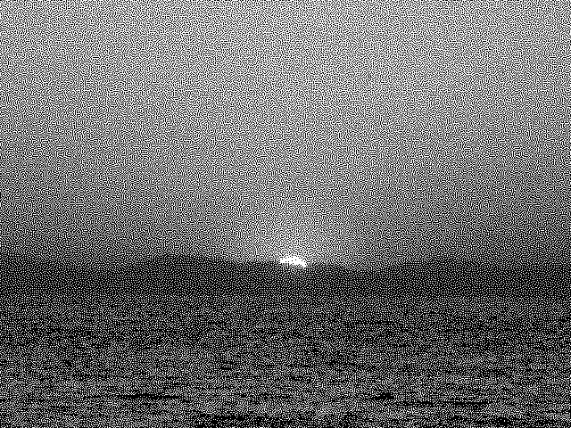 | 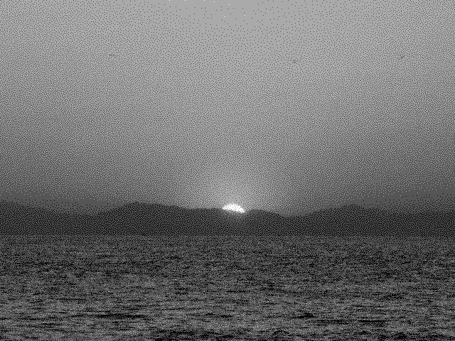 | |
| 元の256階調グレイスケールイメージ | 2階調halftoning イメージ | 4階調halftoning イメージ |
グレイスケール画像を白黒の2色のインクで印刷する。カラー画像をCMYKそれぞれ4階調のインクで印刷する。といった印刷分野でディザリングという技術が使われている。
高品質なディザリング手法として誤差拡散法がある。誤差拡散法は、ある画素とディザリング出力との誤差を、次に出力する画素で調整してトータルの誤差を小さくしていく手法である。
Floyd & Steinberg型の誤差拡散法では、ある画素の誤差を右、左下、下、右下方向へ誤差を拡散していくことになる。
高品質だが、計算量が大きくアルゴリズムも複雑で回路化するのが大変である。
誤差拡散法に対して、組織的ディザリングという手法がある。ある画素と乱数配列の対応する1要素の大小比較によって出力するかどうかを決める手法で、計算量が小さく回路化するのも簡単である。
しかし、ホワイトノイズを組織的ディザリングに使った場合は、誤差拡散法よりも低品質の出力しか得られない。
| 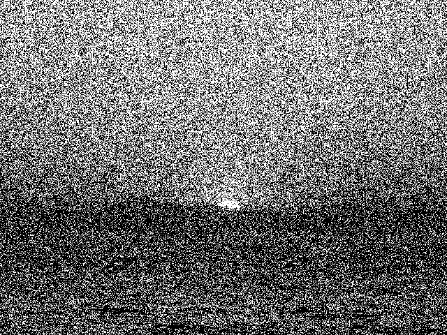 | ||
| オリジナル画像 | 誤差拡散法 | 組織的ディザリング(ホワイトノイズ利用) rand関数(擬似乱数)を使っている。人間の感覚的には汚い画像に見える。 |
ホワイトノイズの代わりにブルーノイズを使うと小メモリ、高速、単純、高品質な組織的ディザリングシステムを構成することができる。
一つの画素に対して、ブルーノイズ配列の一つの要素を参照して大小比較するだけで出力値を得ることができる。
| オリジナル画像 | 誤差拡散法(2階調) | 組織的ディザリング(ブルーノイズ利用 2階調) | 組織的ディザリング(ブルーノイズ利用 4階調) |
| 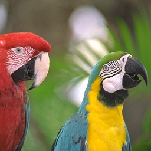 | |||
| オリジナル画像 | 誤差拡散法(4階調) | 組織的ディザリング(ブルーノイズ利用 4階調) |
誤差拡散法とブルーノイズ法の比較
誤差拡散法は、シャープな画像が得られますがグラデーション部分がベッタリする。ブルーノイズ法は、誤差拡散法と比べてわずかにノイズが乗った感じになる。グラデーション部分にもノイズが乗るためスムーズになる。
誤差拡散法の画像のベッタリした部分を改善するために、誤差の配分にランダムノイズを掛け合わせる処理が行なわれますが、結果的にブルーノイズ法と同じような画像が得られる。
処理時間は、アルゴリズムの単純なブルーノイズ法の圧勝。配列の要素を順次取り出して画素値と大小比較するだけです。
ブルーノイズ法のためのしきい値行列を高速(512×512の行列で数秒)に作るプログラムが同時提供されるのでカスタマイズも可能。
本プログラムで生成したブルーノイズは、たとえば特殊印刷用の超大型(横幅数メートル)のプリンターのファームウェアで利用されている。
ディザリング以外には、音声の雑音処理にも使われることがある。
ブルーノイズには以下のような性質がある。
- ブルーノイズの一部はブルーノイズである。
- ブルーノイズマトリクスをつなぎ合わせたものもブルーノイズマトリクスである。 右端と左端、上端と下端をつなぎ合わせても、密度の小さいところや大きいところは発生しない
- とはいえ、ブルーノイズマトリクスは、できるだけ大きい方が、品質が良くなる。 画面の大きさが4096×2048の時に32×32の同じブルーノイズを並べると。やはり32×32のパターンが並んでいることがばれてしまう。
上の二つの性質によって、一つのブルーノイズを用意しておけば、乱数のseedのように毎回異なるブルーノイズ系列を生成することが極めて簡単にできる。
ブルーノイズ配列(行列)へのアクセスの始点を0から変えても、完全なブルーノイズ系列が得られる。ブルーノイズ系列の終点から始点に戻ってもブルーノイズ系列の完全性は保たれる
つまり、剰余計算を使ってアクセスするだけでseedと同じ機能が実現できるのである。
ブルーノイズの規模が16384×16384と大きければ、seedを繰り返しても同じブルーノイズ系列が出現する確率は2億7千万分の1に過ぎない
| 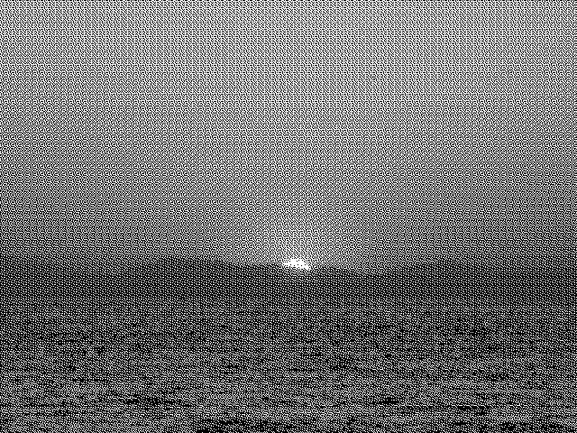 | |
| 8x8のブルーノイズ | 256x256のブルーノイズ |
第３節：生成アルゴリズム、超高速生成アルゴリズム
従来のアルゴリズムはvoid-and-clusterアルゴリズムが使われている。ｎ×ｍピクセルのホワイトノイズから出発して、最も密度の高い領域から1ピクセルを取り出し、最も密度の低い領域へ移動するという処理を、動かせるピクセルが無くなるまで繰り返す。
| 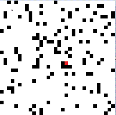 | 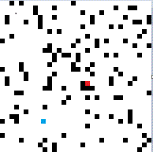 | 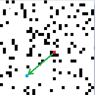 | 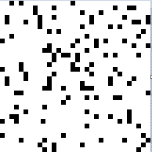 | |
| 出発点のホワイトノイズ | 最も密度の高いピクセルが赤 | 最も密度の高いピクセルが青 | 移動 | 移動した結果 |
ピクセルを移動すると、最も密度が高い領域と最も密度の低い領域が、局所的ではなく画像全体にわたって変更される。
収束するまでは膨大な計算が必要となり、8192×8192ピクセルとなると計算に一ヶ月、それ以上のサイズだと数ヶ月から年単位の時間がかかる。
1ピクセル移動するごとに粗密の状況が変わるため並列に計算するわけにもいかない。
当社の開発した高速ブルーノイズ生成アルゴリズムは、従来の10倍(256×256)から1000倍(16384×16384)以上の速度でマトリクスを作成する。速度向上比率は マトリクスサイズが大きくなるほど顕著になる。
高速アルゴリズムは大きなメモリを必要とする。作成可能な最大マトリクスサイズは、
- グレイスケール(1プレーン)の場合、6Gバイトメモリのマシンで8192×8192程度。
- グレイスケール(1プレーン)の場合、16Gバイトメモリのマシンで16384×16384程度。
- 4プレーン(CMYK)の場合、8Gバイトメモリのマシンで8192×8192程度。
- 3プレーン(RGB)の場合、24Gバイトメモリのマシンで16384×16384程度。
32bit版と64bit版は、コンパイル・リンクをやり直すだけである。
windows版の場合、リンカ―オプションで32bit版は/MACHINE:X86、64bit版は/MACHINE:X64と1ヶ所だけ異なっている。
処理速度は64bit版(Intel(R) Core(TM) i7-9750H CPU 2.6GHz 32GB RAMで
- 256×256のブルーノイズの生成で6.7秒
- 512×512のブルーノイズの生成で7.8秒
- 1024×1024のブルーノイズの生成で59.3秒
- 2048×2048のブルーノイズの生成で429.2秒
- 4096×4096のブルーノイズの生成で2499.0秒
- 8192×8192のブルーノイズの生成で14465.5秒 オリジナルのアルゴリズムでは数か月かかる8192×8192の計算が4時間程度でできるようになる(1000倍高速、サイズが大きくなるほど効果大)。
第４節：何に使うことができるか
- ゲームのミドルウェア開発会社での利用 ある程度の相関のある乱数(もはや乱数とは言えないかも知れないが)はゲームのキャラクターの配置や大当たり(ガチャ)の発生頻度のコントロールなどに利用されている。
- 最初に挙げた参考文献によると、パラメータの初期値に相関のある乱数を使うことで、GAN（敵対的生成ネットワーク）による画像の生成効率のアップが確認されている。
未開拓の分野で、関連する論文はまだ発表されておらず、研究は相関のある乱数が有効な条件の確認を進めているという段階であるそうだ。
乱数よりも「偏りなくバラバラ」な現象を引き起こすために利用されている。
ブルーノイズの一部もブルーノイズとなるという特性がある。
乱数は全体の平均値と、数列の一部の平均値は、一部がかなり大きくならないと近い値にはならない。
ブルーノイズは、任意の一部分が小さくても全体の平均値＝任意の一部分の平均値となる
そのため、恣意的な発生確率のコントロールを、安定して「偏りなくバラバラ」に実現することが可能となる。
ゲームやギャンブルにおける大当たりの連続、はずれの連続という現象の発生確率も、安定的にコントロールすることができる。
例えば11回に1回は大当たり、44回に一回は大当たりが連続、176回に一回は大当たりが3連続という確率現象がブルーノイズで「感覚的に見えバラバラに」発生する。当然はずれが10回以上連続することは無い。
キャラクターの配置も、偏らないようにする、逆に偏るようにするといったコントロールが、しきい値との比較だけでできる。